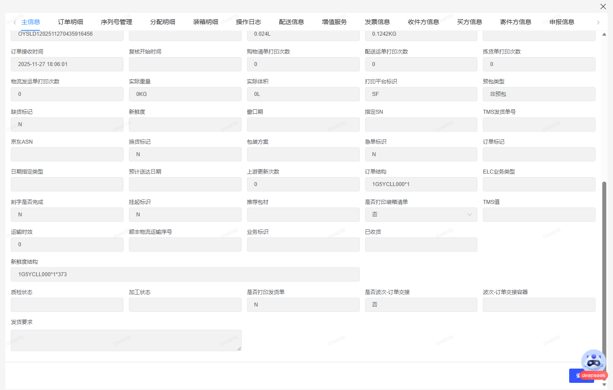
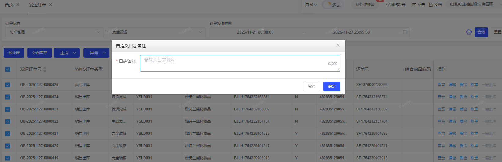
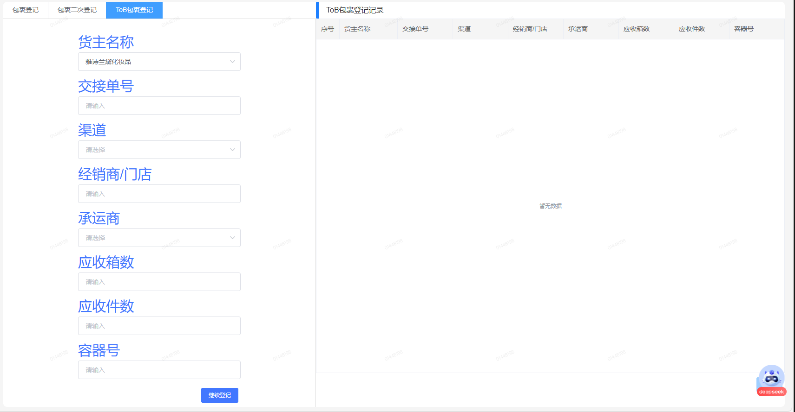
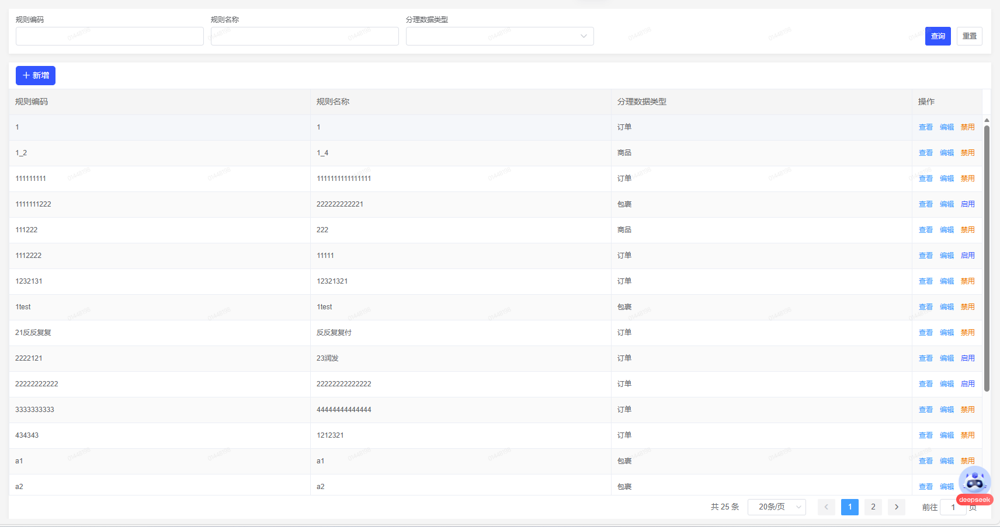
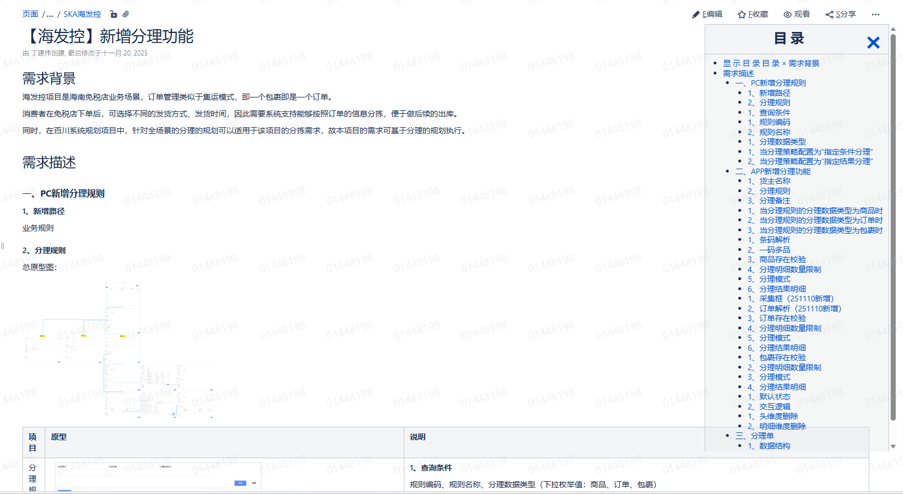

2025届大学生试用期工作汇报
汇报人: 金震宇
时间: 2025.12.9
顺丰科技 · 前端组
目录
- 自我介绍
- 试用期工作回顾与总结
- 未来思考与计划
自我介绍
基本概况
姓名：
金震宇
籍贯：
湖北省孝感市
出生年月：
2004/04/04
专业：
软件工程
学历：
本科
毕业院校：
深圳大学
工作指导
直接上级：
窦彦斌
职位：
应用架构总工程师
导师：
刘烨
职位：
前端开发高级工程师
试用期开发工作概览
• V5.4
• V5.5 SP1 SP3
• V5.6
• V5.7
需求统计
参与版本共计：6个
完成系统需求共计：34个
优化历史问题：4个
代码质量
代码量共计：6361行
转测缺陷共计：2个一般BUG
生产缺陷共计：0个
需求交付效果概况

主信息新增字段

发运订单新增备注弹窗

新增ToB包裹登记页签

新增分理规则菜单页
需求举例简述-STAR
任务背景(S)：
V5.7【海发控】新增分理功能需求：
- 海发控是海南免税店业务项目，需支持按订单信息分拣以配合后续出库；
- 同时针对全场景分理的规划适用于该项目的分拣需求，故基于规划新增分理功能；
任务难点：
- 从0开始新增一个菜单项；
- 改造条件表达式弹窗组件；
- 页面交互逻辑和数据处理复杂；
任务角色(T)：前端开发&联调；

需求举例简述-STAR
任务结果(R)：
- 成功完成海发控分理功能从0到1的开发，功能顺利上线；
- 支持按订单信息灵活分拣，满足海南免税店业务需求，配合后续出库流程高效运转；
- 改造的条件表达式弹窗组件可复用至其他类似需求，提升后续开发效率；
- 转测后仅1个轻微BUG，代码质量达标，无生产问题反馈。
需求举例简述-STAR
试用期其他产出
试用期不足与收获
待提升之处
- 前端SOP规范梳理仍需完善
- 复杂业务场景的技术选型经验不足
- 跨团队沟通效率有待提升
- 性能优化实践经验积累不够
成长与收获
- 掌握SKAWMS系统核心业务逻辑
- 提升团队协作与沟通能力
- 沉淀前端开发最佳实践经验
- 建立系统化的问题分析思维
每一次挑战都是成长的机会，每一次反思都是进步的阶梯
未来思考与计划
个人发展规划路线图
现状分析
当前阶段
深入了解现有系统架构，掌握核心业务逻辑，积累实战经验。
技能提升
1-3个月
深入学习Vue3+TS，优化前端性能，完善组件库建设。
项目主导
3-6个月
独立负责重要功能模块开发，参与技术方案设计与评审。
团队贡献
6-12个月
成为团队技术骨干，分享经验，推动技术创新与最佳实践。
致谢
顺丰科技 · SKAWMS系统研发团队